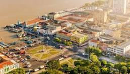

O Pará é um estado localizado na região Norte do Brasil, conhecido por sua vasta extensão territorial e por fazer parte da floresta amazônica. Sua capital é Belém, uma cidade vibrante e cheia de história, famosa por sua culinária, cultura e pelo Mercado Ver-o-Peso. A economia do Pará é baseada na exploração de recursos naturais, como a mineração, a agricultura, a pesca e a extração de madeira. Além disso, o estado possui uma grande diversidade cultural, com influências indígenas, africanas e portuguesas, refletidas em suas festas, tradições e manifestações culturais. O Pará também é conhecido por suas belezas naturais, incluindo rios, florestas e áreas protegidas, que fazem dele um lugar de grande importância ecológica.
